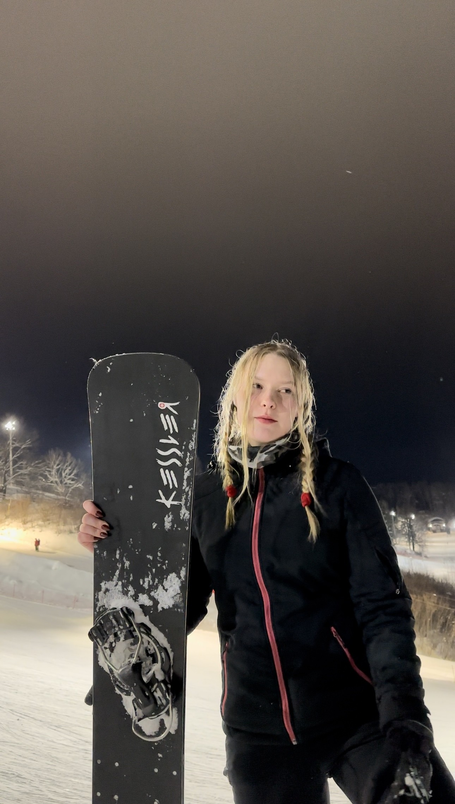

A LIFE ON SNOW / MOSCOW, RUSSIA
Snowboarding,
my story.
My experience on the junior Moscow snowboarding team.
Explore the disciplines
My experience
Hi, I'm Olga. I used to snowboard professionally in Russia, where I was a member of the junior Moscow team. I competed in slalom, giant slalom, and snowboard cross. Snowboarding was a big part of my life, and training and competing taught me how much work goes into the sport.
Slalom and giant slalom are both races through gates. In slalom, the gates are closer together, so the turns come quickly. In giant slalom, the gates are farther apart and the turns are longer. Both events require control and good timing, but they feel different when you ride them. I had to think about each turn and how it would affect the next one.
Snowboard cross is different from the two gate events. Several riders race on the same course, which can have jumps, rollers, and banked turns. You have to pay attention to the course as well as the other riders. I liked getting to experience different kinds of racing.
Being on a team meant training with other athletes and learning alongside them. It also showed me that competition is only one part of the sport. Practice, preparation, and learning from mistakes matter too. I still enjoy looking back on my time snowboarding in Russia and the skills I learned there. On the next page, I explain a little more about each of the three events I did.
Discover the three events →GET IN TOUCH